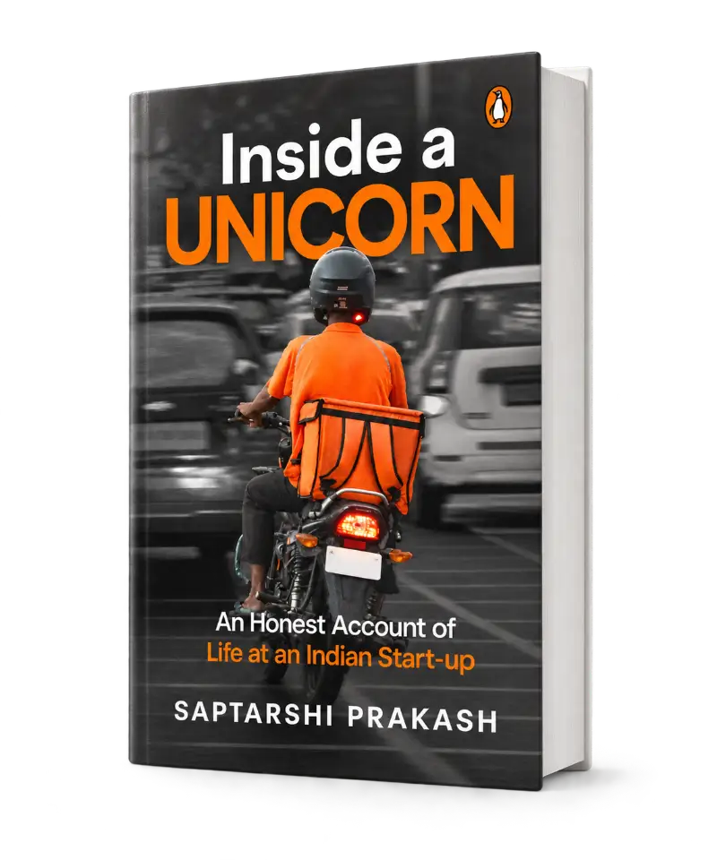
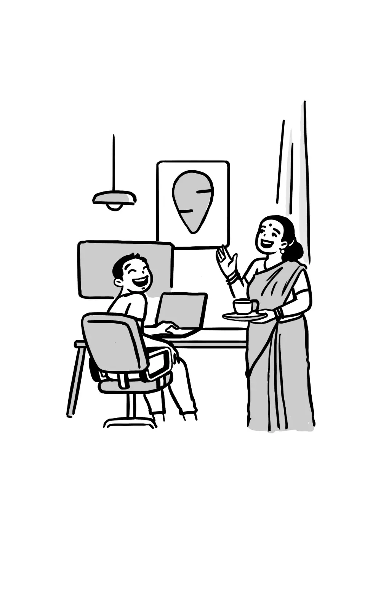

inside a unicorn
You've read how startups are founded. Here's what it's like to work inside one.

a startup looks very different from the inside.
For every startup founder, there are hundreds of people who help build the company. But we rarely hear their stories.
I've spent eleven years at Housing.com, Zeta and Swiggy, experiencing the excitement, chaos, workplace politics, successes and failures that come with building startups.
Inside a Unicorn tells those stories. Not how to build a unicorn, but what it's like to help build one.
